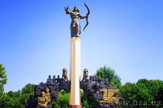

uzbekistan |
|
| uzbekistan |
uzbekistan respublikasi
|
| andijon | |
| buxoro | |
| fargona | |
| jizzax | |
| xorazm | |
| namangan | |
| navoiy | |
| qashqadaryo | |
| qoraqalpog'iston | |
| samarqand | |
| sirdaryo | |
| surhandaryo | |
| toshkent | |
Andijon viloyati Vikipediya, ochiq ensiklopediya Navigatsiya qismiga oʻtishQidirish qismiga oʻtish Bu atamaning boshqa maʼnolari ham mavjud. Qarang: Andijon (maʼnolari). Andijon viloyati viloyat Tarkibida 14 tuman Maʼmuriy markazi Andijon Yirik shahari Asaka, Xonobod, Qorasuv Hokim Shuhratbek Abdurahmonov Aholi (2022) 3 253 528 (4-oʻrin) Zichligi 760 kishi./km² Maydoni 4303 km² Andijon viloyati xaritada Andijon viloyati, Xarita Soat mintaqasi UTC+5 Kod ISO 3166-2 UZ-AN Telefon kodi +998 74[1] Avtomobil raqami kodi 60 – 69 (yangi uslubdagi 2008) Rasmiy sayti andijon.uz Koordinatalari: 40°45′0″N 72°10′0″E G O Andijon viloyati – Oʻzbekiston Respublikasi tarkibidagi viloyat. Fargʻona vodiysining sharqiy qismida. 1941-yil 6-martda tashkil etilgan. Maydoni 4,2 ming km². Aholisi 3 253 501 kishi (2022-yil 1-yanvar holatiga). Andijon viloyatida 14 qishloq tuman, 11 shahar va 95 qishloq fuqarolari yigʻini bor (2000). Markazi — Andijon shahri.[2] Mundarija 1 Tabiati 2 Hududiy boʻlinishi 3 Xoʻjaligi 4 Sanoati 5 Qishloq xoʻjaligi 6 Transporti 7 Madaniy-maorif va sogʻliqni saqlash 8 Sport 9 Adabiyoti 10 Matbuoti, radio va televideniyesi 11 Meʼmoriy yodgorliklari 12 Taniqli shaxslar 13 Manbalar Tabiati Andijon viloyati yer yuzasi asosan tekislik. Hozirgi relyefi va yer yuzasidagi jinslar toʻrtlamchi geologik davrning katta-kichik daryolari va irmoqlarining faoliyatidan hosil boʻlgan. Viloyatning gʻarbiy qismi qirli tekislik (bal. 400–500 m), sharqi (Andijon shahridan sharda) Fargʻona va Olay tizmalarining tarmoqlaridan iborat. Andijon viloyati geologik aktiv zonada joylashgan, kuchli zilzilalar bo'lib turadi (qarang Andijon zilzilasi). Ixdimi keskin kontinental, quruq. Togʻ tkzmalari Fargʻona vodiysini sovuq havoning kirib kelishidan toʻsib turganligi uchun qishda Andijon viloyatida ob-havo birmuncha barqaror. Yozi issiq, iyulning oʻrtacha temperaturasi 27,3°, kishi nisbatan sovuq, yanvarning oʻrtacha temperaturasi –3°. Vegetatsiya davri 217 kun. Yiliga 200 – 250 mm yogʻin tushadi. Av. Oʻzbekistonning boshqa viloyatlariga nisbatan suv resurslariga boy. Daryolari yogʻindan, togʻlarlagi koʻp yillik qor va muzliklardan suv oladi. Asosiy daryosi – Qoradaryo (Sirdaryo irmoqlaridan biri). Uning irmoqlari – Moylisuv, Oqboʻra, Aravonsoy va boshqa Av. daryolarining suvi sugʻorish uchun ishlatiladi. Tuproqlari boʻz, qoʻngʻir, oʻtloqi, oʻtloqi-botqoq tuproqlar, qumtosh, mergel, less va chaqirtoshlardan iborat. Bahorda adirlar efemer oʻsimliklar bilan qoplanadi. Av.ning ekin ekilmaydigan tekislik qismida shuvoq-shoʻra oʻsimliklari, togʻ yon bagʻirlarida pista, bodom oʻsadi. Yovvoyi hayvonlar (buri, tulki, qobon va boshqalar) kam uchraydi; sudraluvchilar, kemiruvchilar, qushlar, suv havzalarida baliqlar bor. Aholisining koʻpchiligini oʻzbeklar tashkil etadi. Qirgʻizlar, Tojiklar, Uygʻurlar, Ruslar, Koreyslar, Qangli VA boshqalar ham bor. Rossiya Qoʻqon xonligini bosib olgach, bu yerga rus, ukrain, tatar, arman, yahudiy va boshqa millat vakillari ko'chib kelgan. 1 km² ga oʻrtacha 517 kishi toʻgʻri keladi. Milliy tarkibi: oʻzbeklar – 86,8 %, qirgʻizlar 3,8 %, tatarlar 3,1 %, Qanglilar 2 %, ruslar 2 %. Shaharliklar 657,7 ming kishi, qishloq aholisi 1539,2 ming kishi (2000). Hududiy boʻlinishi Andijan districts.png Tuman nomi Tuman markazi 1 Andijon (tuman) Andijon 2 Asaka tumani Asaka (shahar) 3 Baliqchi tumani Baliqchi (shahar) 4 Boʻston (tuman) Boʻz (shaharcha) 5 Buloqboshi tumani Buloqboshi 6 Izboskan (tuman) Poytugʻ 7 Jalaquduq (tuman) Jalaquduq 8 Xoʻjaobod tumani Xoʻjaobod 9 Qoʻrgʻontepa tumani Qoʻrgʻontepa 10 Marhamat tumani Marhamat 11 Oltinkoʻl (tuman) Oltinkoʻl (qilshloq) 12 Paxtaobod tumani Paxtaobod 13 Shahrixon (tuman) Shahrixon (shahar) 14 Ulugʻnor (tuman) Oqoltin Xoʻjaligi Andijon viloyati respublika ishlab chiqarishda va madaniy taraqqiyotida yetakchi oʻrin tutgan viloyatlardan biri. Respublikaning 2,6 % neftini, 8,3 % paxtasini, 8,7 % paxta tolasini, 8,7 % oʻsimlik moyini beradi (2000; rejaga nisbatan). Tabiiy resurslar, qishloq xoʻjaligi xom ashyosi negizida ishlaydigan sanoat tarmoklari, shuningdek aholiga isteʼmol buyumlari ishlab chiqaradigan korxonalar barpo etildi. Viloyatda tadbirkorlik rivojlanib borayapti. Uni qoʻllab-quvvatlash maqsadlariga 2 mlrd. soʻmdan ziyod kredit berilib, 3,4 mln. AQSH dollari miqdorida chet el sarmoyasi jalb qilindi (2000). 1995-2000-yillar mobaynida viloyat iktisodiyotida 23,5 mlrd. soʻm chet el sarmoyasi kiritildi. Sanoati Viloyatda foydali qazilmalarni qazib chiqarish, paxtachilik shundayligicha xom ashyo sifatida metropoliyam joʻnatilar edi. 1907-yil yarim hunarmandchilikka asoslangan yogʻ zavodi qurildi. Dastlab bu zavod bir kecha-kunduzda 50 t chigitni qayta ishlab, 8 t ga yaqin yogʻ chiqarar edi. 1954-yilda zavod yogʻ-moy kombinatiga aylantirildi. 1960–70 yillarda Andijon shahrida „Elektrodvigatel“, „Elektroapparat“ kabi yirik korxonalar, Marhamatda esa „Elektrotexnika“ zavodi qurildi. 1941-yil Andijon shahrida motorsozlik zavodi ishga tushirildi. Mustaqillik yillarida viloyat industriyasi oʻz yoʻnalishini oʻzgartirib, tubdan rivojlanmoqda. Mavjud korxonalar davlat tasarrufidan chiqarilib, mulkchilikning oʻzgacha shakliga kirib bormoqda. Xususan aksariyat yirik va oʻrta korxonalar negizida aksiyadorlik jamiyatlari tashkil etildi. Viloyatda mulkchilikning barcha turiga oid 160 sanoat korxonasi bor (2000). Bulardan yiriklari: Bobur nomidagi ip-gazlama ishlab chiqarish aksiyadorlik jamiyati (Andijon shahrida; tumanlarda boʻlimlari bor), „Andijon agrofirmasi“ aksiyadorlikjamiyati, Andijon avtomobil oʻrindiqlari zavodi, Andijon biokimyo zavodi, Andijon irrigatsiya mashinasozlik zavodi, Andijon „Semurgʻ“ trikotaj aksiyadorlik birlashmasi, Andijon don mahsulotlari" aksiyadorlik jamiyati, „Andijonkabel aksiyadorlik jamiyati“, Chinobod paxta tozalash aksiyadorlik jamiyati. 1991–2000-yillar davomida Andijon viloyatida jahon andozasi darajasidagi mahsulotlar ishlab chiqaruvchi zamonaviy qoʻshma korxonalar bunyod qilindi. Viloyatda 79 qoʻshma korxona, 8447 kichik va xususiy korxona mavjud. Viloyatdagi qoʻshma korxonalar butun viloyat yalpi sanoat mahsulotining 53 %dan koʻprogʻini ishlab chiqarmokda (2000). Oʻrta Osiyoda yagona avtomobilsozlik korxonasi – Oʻzbek-Janubiy Koreya „OʻzDEU avto“ kompaniyasi Asaka shahrida joylashgan. Italiyaning „Aka-uka Federichi“ aksiyadorlik jamiyati bilan hamkorlikda Asakada barpo etilgan Oʻzbek-Italiya „FAM“ qoʻshma korxonasi soatiga turiga qarab 1–1,5 t makaron ishlab chiqarish quvvatiga ega. Shahrixon tumanidagi Segazaqum qishlogʻida kalava ip tayyorlaydigan va kelgusida undan gazlama toʻqiydigan „ANTEKS“ ochiq turdagi aksiyadorlik jamiyati korxonasi barpo etildi va irrigatsiya bilan bogʻliq boʻlgan tarmoklar, paxtani qayta ishlash, mashinasozlik va metallsozlik, elektrotexnika sanoatlari, qurilish materiallari ishlab chiqarish, kimyo, yengil (ip-gazlama, paypoq fabrikalari va boshqalar), oziq-ovqat sanoati eng rivojlangan tarmoklardir. Viloyat mamlakatda neft va gaz qazib chiqarishda salmoqli oʻrin tutadi. Oʻnga yaqin neft va neft-gaz konlari (Andijon neft koni, „Xoʻjaobod“, „Boʻston“, „Janubiy Olamushuk“, „Xartum“, „Polvontosh“, „Xoʻjausmon“ va boshqalar) ishlab turibdi. Xoʻjaobod – Andijon – Asaka gaz quvuri bor. Andijon viloyatida dastlabki paxta tozalash zavodlari Andijon shahrida 1911-yilda, Asakada 1912-yilda, Shahrixonda 1915-yilda qurilgan. Sanoatning bu turi paxta yetishtirishga qarab tez rivojlandi. 1924-yil paxta zavodlarida 25 ming t xom ashyo qayta ishlangan edi. 1999-yilda mavjud 13 ta paxta qayta ishlash korxonalarida 325 ming tdan ziyod paxta qayta ishlandi. Viloyatda yetishtirilayotgan pilla, jun, teri umuman qayta ishlanmasdan, lanib, 1999-yil oktabr ida ishga tushirildi). Baliqchi tumani notoʻqima matolar ishlab chiqarish yopiq turdagi aksiyadorlik jamiyati shaklidagi Oʻzbek – Amerika qoʻshma korxonasi ham oʻz mahsulotlari bilan chet elda eʼtibor qozongan korxonalardandir. Qoʻshma korxona zamonaviy uskunalar bilan qayta jihozlandi. Kalava ip va xom gazlama tayyorlanadigan mazkur korxonada 1300dan ortiq ishchi ishlaydi (2000). Shuningdek, viloyatda rivojlangan mamlakatlarning sarmoyalari jalb qilingan „Andijon-Praga“, „Andijon durdonasi“, „Navigul“, „Oʻz-Koromko“, Oʻzbek-Rus-Britaniya „Mask“, „Al-Osiyo“ qoʻshma korxonalari va Oʻzbek-Amerika qoʻshma korxonasi filiali bor.


Buxoro viloyati Vikipediya, ochiq ensiklopediya Navigatsiya qismiga oʻtishQidirish qismiga oʻtish Buxoro viloyati Бухоро вилояти Viloyat Maʼmuriy markazi Buxoro Yirik shahari Buxoro Aholi (2018) 1 870 200 (4-oʻrin) Dinlar tarkibi musulmonlar, xristianlar Maydoni 39 400 km² Buxoro viloyati xaritada Buxoro viloyati, Xarita Soat mintaqasi UTC+5 Kod ISO 3166-2 UZ-BUBuxoro viloyati — Oʻzbekiston Respublikasining 12 viloyatlaridan biri. Oʻzbekiston viloyatlari ichida, chegasining kattaligi boʻyicha Navoiydan keyin ikkinchi oʻrinda turadi. 1938-yil 15-yanvarda tashkil etilgan. Buxoro viloyati hududi asosan Qizilqum choʻlida joylashgan. Janubi-sharqini Zarafshon vodiysi egallagan. Shimoli-gʻarbda Xorazm viloyati va Qoraqalpogʻiston Respublikasi, shimol va sharqdan Navoiy viloyati, janubi-sharqda Qashqadaryo viloyati, janubi-gʻarbda Turkmaniston bilan chegaradosh. Maydoni 39,4 ming km2. Aholisi 1443 mingdan ziyod kishi (2001). Buxoro viloyati tarkibida 11 qishloq tumani: Buxoro, Vobkent, Jondor, Kogon, Olot, Peshku, Romitan, Shofirkon, Qorovulbozor, Qorakoʻl, Gʻijduvon, 11 shahar (Buxoro, Galaosiyo, Vobkent, Gazli, Kogon, Olot, Romitan, Shofirkon, Qorakoʻl, Qorovulbozor, Gʻijduvon), 3 shaharcha (Jondor, Zafarobod, Yangibozor), 121 qishloq fuqarolari yigʻini bor. Buxoro shahar aholisining etnik tarkibi asosan Uzbek, Rus, Fors (Eroniylar), Turkman, tojik, Ukrain, koreys, tatar va boshqalar tashkil etadi.Markazi-Buxoro Avtomobil raqami kodi 80 Koordinatalari: 40°10′0″N 63°40′0″E G O Mundarija 1 Tabiati 2 Hududiy boʻlinishi 3 Sanoati 4 Taʼlim, madaniyat, sport 4.1 Taʼlim 4.2 Sogʻliqni saqlash 4.3 Sport 4.4 Adabiyot 5 Matbuoti, radnoeshittnrnshn va televvsheniyesi 6 Manbalar Tabiati Buxoro viloyati hududining relyefi aksariyat geomorfologik xususiyatlariga koʻra birmuncha murakkab tekisliklardan iborat. Eng baland joyi Quljuqtov tizmasi. Quljuqtov bilan Zarafshon daryosi vodiysi oraligʻida Oyoqogʻitma botigʻi joylashgan. Buxoro viloyatida quyidagi relyef koʻrinishlarini ajratish mumkin: Alohida ifodalangan past togʻlar, platolar (Kuljuqtov, Tuzkoy togʻi, Jarqoq, Saritosh); Tekis yuzali plato va qirlar (Qorakoʻl, Dengizkoʻl, Uchbosh, Qoraqir); Daryo va koʻl yotqiziqlari bilan qoplangan va shamol taʼsirida vujudga kelgan akkumulyativ tekisliklar; Alohida ifodalangan berk botiqlar (Qoraxotin, Oyoqogʻitma, Dengizkoʻl); Yassi yuzali vohalarda balandligi 5–15 m li tepalar uchraydi. Togʻlar asosan silur, devon, toshkoʻmir, boʻr, paleogen, neogen davrlari jinslaridan tuzilgan. Tekislik va qumliklar toʻrtlamchi geologik davr tabiiy omillari taʼsirida oʻzgargan. Foydali qazilmalardan Setalantepa, Jarqoq, Gazli, Uchqirda gaz, Kemachi, Zikri, Oʻrtabuloqda neftgaz hamda grafit konlari, ohaktosh, bentonit (gilmoya), granit konlari topilgan. Buxoro viloyatida juda koʻp mineral suv zaxiralari aniqlangan. Quljuqtov, Qoraxotin, Jingʻildi,Oyoqogʻitma botigʻi atroflaridan topilgan suvlardan xoʻjalikda qisman foydalaniladi. Viloyat seysmik jihatdan 7 balli, faqat Gazli shahri atrofi 9 balli zilzila zonasiga kiradi. Iqlimi keskin kontinental: yozi issiq, uzoq, quruq, iyulning oʻrtacha harorati 28-32°, qumliklarda 60-70° gacha koʻtariladi. yanvarning oʻrtacha harorati 0° dan −2° gacha yiliga 90–150 mm yogʻin tushadi. Asosan bahor va qishda yogʻadi. Vegetatsiya davri 220 kun. Buxoro viloyatining asosiy suv manbai — AmuBuxoro mashina kanali. Quyimozor, Toʻdakul, Shoʻrkul suv omborlarining ahamiyati katta. Bundan tashqari vohalar atrofida zovur va oqova suvlar tashlanadigan Dengizkoʻl, Qoraqir, Katta Tuzkon va Devxona kabi koʻllar mavjud. Buxoro viloyati boʻyicha obikor yerlarning 94,4 % turli darajada shoʻrlangan. Choʻl zonasida kam chirindili qoʻngʻir tusli sur, qumli ishgandan soʻng, oziq-ovqat sanoatida tashkiliy va iqtisodiy islohotlar amalga oshirildi. Hududiy boʻlinishi Bo'linishi: Olot (1), Buxoro (2), Vobkent (11), G'ijduvon (3), Jondor (4), Kogon (5), Qorako'l (6), Qorovulbozor (7), Peshkun (8), Romitan (9), Shofirkon (10) # Tuman nomi Tuman markazi 1 Olot tumani Olot 2 Buxoro tumani Galaosiyo 3 Gʻijduvon tumani Gʻijduvon 4 Jondor tumani Jondor (shaharcha) 5 Kogon tumani Kogon 6 Qorakoʻl tumani Qorakoʻl (shahar) 7 Qorovulbozor tumani Qorovulbozor 8 Peshku tumani Yangibozor 9 Romitan tumani Romitan 10 Shofirkon tumani Shofirkon 11 Vobkent tumani Vobkent Sanoati Korxonalar ilgʻor texnologiya bilan jihozlandi. Yangi qadoqlash liniyalari, Buxoro, Gʻijduvon, Qorakoʻl, Vobkent shaharlarida Germaniya texnologiyasiga asoslangan non sexlari ishga tushirildi. „Buxoroteks“ aksiyadorlik jamiyatining filiallari Gʻijduvon, Vobkent, Qorakoʻl va Olotda ishlab turibdi. Buxoro pillakashlik fabrikasi va uning filiallarida pilla qayta ishlanmoqda. Buxoro trikotaj kiyimlar fabrikasida erkaklar, ayollar va bolalarning ustki va ichki kiyimlari ishlab chiqariladi. Buxoro tikuvchilik fabrikasi, Buxoro va Gʻijduvon poyabzal fabrikasi, Shofirkonda Turkiya bilan hamkorlikda qurilgan „Vardanzi“ tikuvchilik qoʻshma korxonasi, „Qorakoʻl“ aksiyadorlik jamiyati qoshida Yunoniston bilan hamkorlikda „Omega-Sitora“ qoʻshma korxonasi ishga tushirildi. Mahalliy sanoat korxonalaridan Buxoro „Zardoʻz“ aksiyadorlik jamiyati, Gʻijduvon kulolchilik sexi, Gʻijduvon va Shofirkondagi gilam toʻqish fabrikalari, Kogon paxta titish fabrikasi, Romitan toʻqimachilik fabrikasi, tikuvchilik, badiiy kashtachilik, misgarlik, zargarlik, kosibchilik va 20 dan ortiq gʻisht zavodlari ishlab turibdi. Paxta tayyorlash punktlari, quritish, tozalash sexlari, paxta tozalash zavodlari bor. Paxta tolasi yangi uskuna va texnologiyalar asosida jahon andozalariga muvofiq ishlab chiqarilmoqda. Buxoro uysozlik kombinati, Kogon ohak zavodi, Quyimozor va Kogon yigʻma temirbeton buyumlari zavodlari, Italiya bilan hamkorlikda qurilgan koshinlar ishlab chiqariladigan „Minokor“ zavodi, Buxoro temirbeton zavodi bor. Gazavtomatika ishlab chiqarish birlashmasida qurilish materiallari ishlab chiqariladi.Qishloq xoʻjaligi. Buxoro viloyati iqtisodiyotining asosini qishloq xoʻjaligi (paxtachilik, gʻallachilik, mevachilik, polizchilik, sabzavotchilik, bogʻdorchilik, chorvachilik) tashkil etadi. Viloyat dehqonchiligida sugʻoriladigan yerlar (tomorqa yerlar bilan birga) 273,7 ming ga, partov yerlar 14,2 ming ga, choʻl yaylovlari 2764, 6 ming ga, Paxta 129 ming ga, makkajoʻxori 857 ga, donli ekinlar 81,2 ming ga, sholi 200 ga, pomidor 2741 ga, sabzavot-poliz ekinlari 9,3 ming ga, lavlagi 116 ga, kartoshka 2967 ga, yemxashak ekinlari 15,9 ming ga, shu jumladan beda 7,1 ming ga, bogʻlar 18,2 ming ga, tutzorlar 5,9 ming ga, Buxoro viloyati da 236 shirkat uyushmasi va jamoa xoʻjaligi, 4162 fermer xoʻjaligi, 41 xoʻjaliklararo korxona, 5 parrandachilik fabrikasi mavjud (2001), Chorvachilik Buxoro viloyatining rivojlangan tarmogʻi boʻlib, qoramolchilik, qoʻychilik, echkichilik, yilqichilik, tuyachilik va parrandachilik rivojlangan. Ayniqsa, Buxoro qorakoʻllari mashhur. Buxoro viloyatining barcha tizimdagi xoʻjaliklarida 428 ming qoramol, shundan 184,7 ming sigir, 750 ming qoʻy, 64 ming echki, 3 ming yilqi, 2,8 ming tuya, 771 ming parranda mavjud (2001). Viloyatda ipak qurti ham boqiladi. 10 ta oʻrmonchilik xoʻjaligi boʻlib, asosiy oʻsimliklari saksovul, cherkez, qandim. Qorakoʻl oʻrmon xoʻjaligida esa dorivor oʻsimliklar ham yetishtiriladi.Transporti. Buxoro viloyatidan magistral temir yoʻli oʻtgan. Eng katta temir yoʻl stansiyasi — Kogon. Viloyat ahamiyatidagi avtomobil yoʻllarining umumiy uz. 9820 km, shu jumladan qattiq qoplamali yoʻllar 4655 km (2000). Asosiy avtomobil yoʻllari: Buxoro-Toshkent, Buxoro-Urganch-Nukus, Buxoro-Turkmanobod (Chorjoʻy) va Buxoro-Termiz yoʻnalishlari. Aeroport bor. Taʼlim, madaniyat, sport

Fargʻona viloyati Vikipediya, ochiq ensiklopediya Navigatsiya qismiga oʻtishQidirish qismiga oʻtish Bu atamaning boshqa maʼnolari ham mavjud. Qarang: Fargʻona viloyati (maʼnolari). Fargʻona viloyati viloyat Maʼmuriy markazi Fargʻona Yirik shaharlari Fargʻona, Qoʻqon, Margʻilon, Quvasoy Asos solingan sanasi 1938-yil Hokim Xayrulla Bozorov Rasmiy tillar oʻzbekcha Aholi (2020) 3,817,000 (2-oʻrin) Zichligi 474,88 kishi./km² Dinlar tarkibi musulmonlar, xristianlar Maydoni 6 800 km² (10-oʻrin) Fargʻona viloyati xaritada Fargʻona viloyati, Xarita Soat mintaqasi UTC+5 Kod ISO 3166-2 UZ-FA Avtomobil raqami kodi 40 - 49 (2008-yildan) Rasmiy sayti http://ferghana.uz/ (oʻzb.) Koordinatalari: 40°25′48″N 71°21′0″E G O Fargʻona viloyati — Oʻzbekiston Respublikasi tarkibidagi viloyat. 1938-yil 15-yanvarda tashkil etilgan. Respublikaning sharqida, Fargʻona vodiysining janubida joylashgan. Shimoldan Namangan, Andijon viloyatlari, janub va sharqdan Qirgʻiziston, gʻarbdan Tojikiston Respublikalari bilan chegaradosh. Maydoni 6,8 ming km2. Aholisi 2020-yilda 3,817,000 kishi. Tarkibida 15 tuman, 9 shahar (Beshariq, Margʻilon, Rishton, Fargʻona, Yaypan, Quva, Quvasoy, Qoʻqon, Hamza), 10 shaharcha, 164 qishloq fuqarolari yigʻini bor (2004). Markazi — Fargʻona shahri. Mundarija 1 Tarixi 2 Hududiy boʻlinishi 2.1 Shaharlar 2.2 Tumanlari 3 Tabiati 4 Aholisi 5 Xoʻjaligi 6 Qishloq xoʻjali 7 Transporti 8 Ijtimoiy soha 8.1 Maorifi va madaniyati 8.2 Sogʻliqni saqlash 8.3 Sport 9 Adabiyoti 10 Matbuoti, radioeshittirishi va televideniyesi 11 Meʼmoriy yodgorliklari 12 Manbalar 13 Adabiyotlar Tarixi Xudoyorxon oʻrdasi Fargʻona darvozasi Fargʻona xalqaro aeroporti Fargʻona viloyati Oʻzbekistonning qadimgi madaniyat oʻchoqlaridan biri. Viloyat hududida topilgan tosh davri manzilgohlari va qoyatoshlariga solingan suratlar vodiyda odamlar eng qadimgi davrlardan beri yashab kelganliklaridan darak beradi. Fargʻona viloyatining tosh davri yodgorliklarini 1954-yil A.P. Okladnikov rahbarligidagi arxeologiya otryadi oʻrgangan. Vodiyning sharqiy qismidagi Qayroqqum, Xoʻjagʻor va Uchqoʻrgʻon makonlaridan mustye davriga oid tosh qurollar topildi. Vodiyning gʻarbiy qismidagi qadimgi tosh davri madaniyatiga oid manzilgohlar mustye davridagi Qalʼacha, Jarqoʻton va Qapchigʻay tosh qurollar ishlash ustaxonalari topilib oʻrganildi. 1958-yil birinchi marta Markaziy Fargʻonadan mezolit davriga oid mikrolit tosh qurollari topildi. Shuningdek, Markaziy Fargʻonadagi Uzunkoʻl va Tayloqkoʻl atroflaridan mezolit va neolit davrlariga oid 24 ta manzilgoh borligi aniqlandi (1965). Soʻx vohasidagi 28 gʻor va ungurlar (Selungur, Eshma, Obishir, Sur, Bel, Zim, Ovikambar, Bogʻishim va boshqalar) roʻyxatga olindi. Obishir gʻorlaridagi madaniy qatlam yaxshi saklangan. Gʻorlarni qazish jarayonida mezolit davriga oid tosh qurollar, xayvon suyaklari topilgan. Bular oʻsha davr turmushini oʻrganish imkonini beradi. 1967 va 1969—70 yillarda Sankt-Peterburgdagi Ermitaj muzeyi xodimlari mezolit va neolit davrlariga oid 35 ta manzilgoh topdilar. Fargʻona viloyatining arxeologik yodgorliklarini oʻrganishda Katta Fargʻona kanalining qazilishi muhim ahamiyatga ega boʻldi. Kanalni qazish jarayonida jez davri, quldorlik va zamindorlik jamiyatlariga oid yodgorliklar topildi va tekshirildi. Quva va Toshloq tumanlari oʻrtasidagi Akbarobod qishlogʻida jez davriga oid manzilgoh, Margʻilonsoyning chap sohilida Oqtom qabristoni boʻlganligi aniqlandi. Fargʻona viloyatining Quva tumanida quldorlik davriga oid Taxyontepa, Fargʻona shahrida Simtepa (Chimtepa) kabi yodgorliklar topib oʻrganilgan. Ayniqsa, Quva shahridagi miloddan avvalgi 5-asr va oʻrta asr boshlariga oid topilmalar yaxshi tekshirilgan. 10-11-asrlarga doir tarixiy manbalarda bu shahar obodligi va kattaligi jihatidan vodiyda Axsikatdan soʻng eng yirik shahar deb qayd qilingan. Arxeologik materiallar Margʻilon shahri 10-asrda katta qishloq boʻlib, 11-12-asrlarda shaharga aylanganligini, Rishton esa 10-asrda katta shahar boʻlsa ham, 11-12 asrlarga kelib qishloq qiyofasiga kirib qolganligini isbotlaydi. Oʻtroq dehqonchilik, chorvachilik bilan shugʻullangan Chust madaniyatiga oid manzilgohlardan topilgan yodgorliklar Fargʻona vodiysini oʻrganishda muhimdir. U yerda ishlab chiqarish kuchlari va xoʻjalikning taraqqiyoti jez davrining oxirida dehqonchilik qabilalarining ijtimoiy tuzumida oʻzgarish yuz berishiga, natijada ibtidoiy tartiblar tugab, jamiyatdagi tabaqalanishga olib kelgan. Roʻzgʻor anjomlarida xususiy mulkchilik kurtaklari koʻzga tashlanadi. Arxeologik tekshirishlar natijasi Fargʻona viloyatida qadimdan odamlar yashab, ovchilik, dehqonchilik, chorvachilik bilan shugʻullanganligidan, kishilik jamiyatining keyingi bosqichlarida esa madaniyat rivojlana boshlaganligidan dalolat beradi. Hududiy boʻlinishi Fargʻona viloyati hududiy jihatdan 15 ta tuman va 4 ta shaharga boʻlingan. Shaharlar Fargʻona viloyatiga bevosita boʻysunadigan quyidagi 4 ta shahar mavjud: Fargʻona[1] Qoʻqon[2] Margʻilon[3] Quvasoy[4] Tumanlari Fergana districts.png Tuman nomi Tuman markazi 1 Oltiariq tumani Oltiariq 2 Bagʻdod tumani Bagʻdod (shaharcha) 3 Beshariq tumani Beshariq 4 Buvayda tumani Buvayda 5 Dangʻara tumani Dangʻara 6 Fargʻona tumani Vodil 7 Furqat tumani Navbahor (qishloq) 8 Qoʻshtepa tumani Langar (qishloq) 9 Quva tumani Quva 10 Rishton tumani Rishton 11 Soʻx tumani Ravon (qishloq) 12 Toshloq tumani Toshloq 13 Uchkoʻprik tumani Uchkoʻprik 14 Oʻzbekiston tumani Yaypan 15 Yozyovon tumani Yozyovon Tabiati Fargʻona viloyatining shimoliy qismini Qoraqalpoq va Yozyovon dashtlari egallagan, janubdan Olay tizmasidan oqib tushadigan daryolarning yoyilmalari bilan oʻralgan. Janubda adirlar Olay tizmasining togʻ oldilari bilan almashinib turadi. Fargʻona viloyati yuqori seysmik zona hisoblanadi. Iqlimi kontinental. Qishi birmuncha yumshoq, baʼzan havo juda sovib ketadi. Yanvar oyining oʻrtacha harorati — 3,2 °C, iyulniki 28 °C. Eng past harorat —27,9 °C. Eng yuqori harorat 42 °C. Vodiyning gʻarbida esadigan kuchli „Qoʻqon shamoli“ iqlimga salbiy taʼsir etadi. Shamolning tezligi sekundiga baʼzan 35–40 metrga yetadi. Janubi-sharqida yozda garmsel esadi. Yiliga gʻarbida 100 mm dan (Qoʻqon atrofi) sharqiy qismida 170 mm gacha, togʻ yon bagʻirlarida 270 mm gacha yogʻin tushadi, asosan, bahorda yogʻadi. Vegetatsiya davri 210—240 kun. Viloyatning shimoli-gʻarbiy chegarasi boʻylab Sirdaryo oqadi. Olay tizmasidan Isfara, Soʻx, Shohimardon, Isfayramsoy boshlanadi. Daryolar muzlikqor suvlaridan toʻyinadi. Iyul— avgustda toʻlib oqadi. Daryo suvlari sugʻorishga sarflanadi. Asosan, boʻz tuproq va oʻtloqi botqoq tuproklar keng tarqalgan. Adirlarda aksari och va tipik boʻz tuproqlar, Sirdaryo terrasalarida allyuvialoʻtloqi tuproqlar, viloyatning shimoliy qismida shoʻrxok oʻtloqlar va ajriqli oʻtloqlar mavjud. Markaziy Fargʻonadagi shoʻrxoklarda turli xil shoʻra oʻsadi. Yerlarining kattagina qismi ekinzor. Vohalarda terak, tut, qayragʻoch, daryo vodiylarida keng bargli oʻrmonlar va archazorlar bor. Yovvoyi hayvonlardan Sirdaryo toʻqayzorlarida qobon, adir va Olay tizmasi togʻ oldilarida boʻri, tulki, chiyaboʻri, quyon, boʻrsiq, jayra yashaydi. Ondatra, nutriya iklimlashtirilgan. Qushlar, sudraluvchilar koʻp. Suv havzalarida marinka, usach, zogʻora baliq, karp, oq amur, doʻngpeshona baliqlar bor. Aholisi

Jizzax viloyati Vikipediya, ochiq ensiklopediya Navigatsiya qismiga oʻtishQidirish qismiga oʻtish Jizzax viloyati viloyat Maʼmuriy markazi Jizzax Yirik shaharlari Jizzax, Gagarin, Paxtakor,Zarbdor, Zomin Asos solingan sanasi 1973-yil Hokim Ergash Saliyev Rasmiy tili o'zbek Aholi 1 400 000 (2021) (11-oʻrin) Millatlar tarkibi ko'p millatli Dinlar tarkibi musulmonlar Maydoni 21200 km² (40% tog'li 25 cho'l qolganiekin maydonlari %, 21200-oʻrin) Jizzax viloyati xaritada Jizzax viloyati, Xarita Soat mintaqasi UTC+5 Kod ISO 3166-2 UZ-JI Telefon kodi +99872 Pochta indeksi 130100 Rasmiy sayti jizzax.uz Koordinatalari: 40°25′0″N 67°40′0″E G O Jizzax viloyati — Oʻzbekiston Respublikasi tarkibidagi viloyat. Respublikaning markaziy qismida. 1973-yil 28-dekabrda tashkil etilgan. Shim.-sharqda Qozogʻiston Respublikasi va Sirdaryo viloyati, janubi-gʻarbda Samarqand, Navoiy viloyatlari, janubisharqda Tojikiston Respublikasi bilan chegaradosh. Maydon 21,2 ming km2. Aholisi 1 382,10 ming kishi (2020). Jizzax viloyatida 12 qishloq tumani (Arnasoy, Baxmal, Doʻstlik, Sharof Rashidov, Zarbdor, Zafarobod, Zomin, Mirzachoʻl, Paxtakor, Yangiobod, Forish, Gʻallaorol), 9 shahar (Gagarin, Dashtobod, Doʻstlik, Jizzax, Marjonbuloq, Paxtakor, Gʻallaorol,Zarbdor,Zomin), 8 shaharcha (Boʻston, Zafarobod, Oʻsmat, Uchquloch, Bog'don,Pishag'ar,Qoʻytosh,Sharq yulduzi), 95 qishloq fuqarolari yigʻini bor (2001). Markazi — Jizzax shahri (Jizzax viloyati tumanlari haqida tegishli maqolalarga q.) Mundarija 1 Tabiati 2 Xoʻjaligi 3 Hududiy boʻlinishi 4 Sanoati 5 Qishloq xoʻjaligi 6 Transporti 7 Madaniy-maorif, sogʻliqni saqlash va sporti 8 Adabiyoti 9 Matbuoti, radio va televideniyesi 10 Meʼmoriy va tarixiy yodgorliklari 11 Jizzax viloyatidagi oliy taʼlim muassasalari 12 Havolalar 13 Manbalar 14 Havolalar Tabiati Relyefi togʻlik, qir va tekisliklardan iborat. Janubiy qismini Turkiston tizmasining tarmoqlari (Molguzar tizmasi), gʻarbini Nurota tizmasining sharqiy qismi egallagan. Shim., shimoli-gʻarbi va sharqiy qismi (Mirzachoʻl va Qizilqum choʻlining janubi-sharqi) tekislikdan iborat. Iqlimi keskin kontinental. Yanvarning oʻrtacha tempaturasi -G dan —4° gacha, iyulniki 28°. Togʻ oldilarida iqlim choʻl va dashtlarga nisbatan yumshoq.-yillik yogʻin viloyat janubida 400-500 mm, shimolida 250- 300 mm. Vegetatsiya davri 210—240 kun.-yillik quyoshli kunlar 2800—3000 soat. Eng yirik daryolari — Sangzor, Zominsuv. Togʻlardan oqib tushuvchi soy koʻp. Ekinlarni sugʻorish uchun Tuyatortar kanali, 1- va 2-Janubiy Mirzachoʻl kanallari, Jizzax, Zomin, Qorovultepa suv omborlari qurilgan. 2001-yilda Arnasoy suv ombori qurila boshlandi. Arnasoy, Aydarkoʻl va Tuzkon koʻllaridan baliqchilikda foydalaniladi. Togʻ yon bagʻirlarida yovvoyi jiyda, archa, bodom, yongʻoq, naʼmatak, zira, rovoch, zirk kabilar oʻsadi. Yovvoyi hayvonlardan oq tirnoqli ayiq, chiyaboʻri, tulki, quyon, qobon, boʻrsiq, jayra uchraydi; burgut, lochin, qora turna, bulduruq, tuvaloq, tustovuq, qirgʻovul, yovvoyi oʻrdak, kaklik kabi qushlarning 150 dan ortiq turi mavjud. Viloyatda Zomin milliy bogʻi, Zomin va Nurota davlat quriqxonalari tashkil qilingan. Tarkibida temir, oltingugurt, vodorod, radiy, kremniy kislotasi, karbon gazi, ishqor boʻlgan shifobaxsh mineral suvlar bor. Gʻallaorol, Forish, Mirzachoʻl tumanlarida balneologik sanatoriylar faoliyat koʻrsatadi. Sulfatxlorid natriyli Chimqoʻrgʻon balchigʻidan fizioterapiya va davolash profilaktika muassasalarida foydalaniladi. Foydali qazilmalardan oltin, kumush, volfram, qoʻrgʻoshin, rux, temir, molibden, marmar, vollastonit, bazalt, granit, korund, ohak bor. Aholisi 1 km2 ga 46,9 kishi toʻgʻri keladi (2001). Aholining koʻpchiligi oʻzbeklar, shuningdek, qozoq, qirgʻiz, tojik, rus, tatar, turk, ukrain, nemis, fors, arman va b. Jami 70 dan ortiq millat vakili yashaydi. Shaharliklar 30 %, qishloq aholisi 70 % ni tashkil etadi. Xoʻjaligi Jizzax viloyati respublika ishlab chiqarishda va madaniy taraqqiyotida salmoqli oʻrin tutadi. Xususan, paxta, gʻalla, sabzavot, meva, chorva mahsulotlari yetishtiriladi. Bogʻdorchilikni rivojlantirishga eʼtibor berilmoqda. Qurilish materiallari, xalq isteʼmol mollari ishlab chiqaradigan korxonalar salmogʻi oshdi. Viloyatda tadbirkorlikni rivojlantirish maqsadida 2,5 mlrd. soʻmdan ziyod kredit mablagʻlari ajratildi. Faoliyat koʻrsatayotgan 9400 ga yaqin xoʻjalik subʼyektlarining qariyb 8300 tasi nodavlat xoʻjaliklaridir. Hududiy boʻlinishi Jizzakh districts.png Tuman nomi Tuman markazi 1 Arnasoy tumani Gʻoliblar 2 Baxmal tumani Usmat 3 Doʻstlik tumani Doʻstlik 4 Forish tumani Yangiqishloq 5 Gʻallaorol tumani Gʻallaorol 6 Sharof Rashidov tumani Uchtepa 7 Mirzachoʻl tumani Gagarin 8 Paxtakor tumani Paxtakor 9 Yangiobod tumani Balandchaqir 10 Zomin tumani Zomin 11 Zafarobod tumani Zafarobod 12 Zarbdor tumani Zarbdor Sanoati Hozirgi Jizzax viloyati qadimdan Buyuk ipak yoʻlida joylashganligi bu xududda savdo madaniyatining tez rivojlanishiga taʼsir etdi. Ilk oʻrta asrlarda jahon bozorida Jizzaxda jun va teridan tayyorlangan mahsulotlarga talab katta boʻlgan. 8—9-asrlarda kulollik, zargarlik, aravasozlik kabi mahallalarining mavjudligi milliy hunarmandchilikning oʻsha davrlarda rivojlanganligidan darak beradi. Viloyatdagi ishlab chiqarish sanoat tarmoqlarini hududiy jihatdan Jizzax, Gʻalla-orol, Dashtobod, Doʻstlik shaharlaridagi sanoat tarmoqlariga ajratish mumkin. Bular foydali qazilmalarni qazib chiqarish, paxtachilik va irrigatsiya bilan bogʻliq boʻlgan tarmoqlar, paxtani qayta ishlash, elektrotexnika sanoati, qurilish materiallari ishlab chiqarish, kimyo, yengil sanoat (ip yigiruv, paypoq toʻqish, ustki trikotaj fabrikalari), oziq-ovqat sanoatidir. Viloyatda qurilish materiallari, oziq-ovqat mahsulotlari, xalq isteʼmoli mollari ishlab chiqaruvchi korxonalarning salmogʻi sezilarli. Shulardan Dashtobod qurilish materiallari, Zomin oniks, Baxmal marmar, gʻisht zavodlari, Dashtobod, Doʻstlik un kombinatlari, Jizzax mebel fabrikasi ishlab turibdi. Jizzax viloyatida konchilik tarmogʻi ham rivojlangan. Marjon buloq oltin koni, Qoʻytoshdagi ohak, vollastonit, volfram, Koʻtarmada ohak, Uchqulochda qoʻrgʻoshin konlari faoliyat koʻrsatmoqda. 1991 — 2001-yillar davomida Jizzax viloyatida jahon andozasi darajasidagi mahsulotlar ishlab chiqaruvchi zamonaviy qoʻshma korxonalar tashkil qilindi. Viloyatda qoʻshma, kichik va xususiy korxonalar mavjud. Qoʻshma korxonalarda ishlab chiqarilayotgan sanoat mahsulotining salmogʻi tobora ortib bormoqda. „Jibri“ (Oʻzbekiston — Buyuk Britaniya) qoʻshma korxonasi-yiliga 50 ming t chigitni qayta ishlab oʻsimlik yogʻi ishlab chiqaradi, „Kumush tola“ (Oʻzbekiston—Tojikiston) qoʻshma korxonasi-yiliga 80 t dan ziyod ipak tolasini tayyorlaydi, „Paxta interneyshnl“ (Oʻzbekiston—Suriya) qoʻshma korxonasi-yiliga 10 ming t lintdan sellyuloza ishlab chiqarish quvvatiga ega, „Baxmalsharob“ (Oʻzbekiston—Polsha) qoʻshma korxonasida mineral suvi qadoqlanadi. Shuningdek, paxta tolasidan eshilgan ip tayyorlovchi „Irjartekstil“ (Oʻzbekiston—Pokiston), yogʻ-moy va sovun ishlab chiqaruvchi „Madina“ (Oʻzbekiston—Xitoy), „Jizzax—Telekom“ (Oʻzbekiston —Indoneziya), Qoʻytosh shaharchasida „Vollastonit“ ishlab chiqarish sexi (Oʻzbekiston—Rossiya), sanoat mahsulotlari ishlab chiqaruvchi „Vostok LTD“, „Belogorsk“ qoʻshma korxonalarining hissasi sezilarlidir.-yiliga 1 mln. dona akkumulyator tayyorlovchi „Oʻzeksayd“ qoʻshma korxonasi faoliyat koʻrsatadi (2002). „Zilolateks“ aksiyadorlik jamiyatida 250 t nitron matosi ishlab chiqarish quvvati ishga tushirildi. Qishloq xoʻjaligi Viloyat qishloq xoʻjaligining asosiy tarmogʻi — paxtachilik. Paxta ekini maydoni viloyatdagi sugʻoriladigan yer maydonining asosiy qismi (110 ming ga)ni tashkil etadi. Viloyatning 12 tumanidan 10 tasida paxta ekiladi. 1994-yildan Jizzax viloyatida gʻalla ekiladigan maydon keskin oshirildi. 2000-yilda 317,7 ming t gʻalla tayyorlandi. Gʻallachilikni rivojlantirish uchun tabiiy sharoitlar va boshqalar imkoniyatlar mavjud, Viloyat qishloq xoʻjaligida pillachilik ham salmoqli oʻrin tutadi. Joylarda-yiliga 440—480 t pilla yetishtirish imkonini beradigan tabiiy resurslar yaratildi. Qishloq xoʻjaligida kartoshka, poliz, sabzavot, uzum, hoʻl meva yetishtirish bilan ham shugʻullaniladi. Bir-yilda 25—30 ming t kartoshka yetishtiriladi. Poliz va sabzavotdan-yiliga oʻrtacha 70 ming t dan hosil olinadi. Jizzax viloyatida 9,4 ming ga dan ortiq, maydon mevali bogʻ (olma, behi, shaftoli, oʻrik, olcha, gilos, anor), 7,9 ming ga tokzor, 2,4 ming ga tutzor, 410 ga koʻchatzor. 78,7 ming ga yer qoʻriqxonaga aylantirilgan. Qishloq xoʻjaligida foydalaniladigan yerlar 1241,4 ming ga, shu jumladan haydaladigan yerlar 478,5 ming ga, shundan sugʻoriladigan yerlar 266 ming ga, lalmi yerlar 212,5 ming ga, yaylovlar 850 ming ga, pichanzorlar 12,5 ming ga, koʻp-yillik daraxtzorlar 21,5 ming ga. Don ekinlari 212 ming ga, paxta ekiladigan maydon 110,8 ming ga, sabzavotpoliz ekinlari 10 ming ga, ozuqa ekinlari 12,5 ming ga, 165 ming ga oʻrmonzor bor. (2001). Jizzax viloyatida jamoa, davlat, shirkat va fermer xoʻjaliklari mavjud. Fermer xoʻjaliklarining salmogʻi ortib bormoqda. Viloyat qishloq xoʻjaligida chorvachilik aloxida oʻrin tutadi. Barcha xoʻjaliklarda 280 mingdan ziyod qoramol, 800 mingdan koʻproq qoʻy va echki, qariyb 15 ming ot, 410 mingga yaqin parranda boqiladi (2000).


eQoraqalpogʻiston Vikipediya, ochiq ensiklopediya Navigatsiya qismiga oʻtishQidirish qismiga oʻtish Bu atamaning boshqa maʼnolari ham mavjud. Qarang: Qoraqalpogʻiston (maʼnolari). Qoraqalpog'iston Respublikasi Qaraqalpaqstan Respublikası Gerb Gerb Bayroq Bayroq Oʻzbekiston tarkibidagi subyekt Madhiya: Jayxun jag'asinda o'sken bay terek, Tu'bi bir shaqasi min bolar demek. Tarkibida 16 tuman va Nukus shahri Maʼmuriy markazi Nukus Yirik shahari Nukus Boshqa yirik shaharlari Xoʻjayli, Qongʻirot, Beruniy, Toʻrtkoʻl, Chimboy, Boʻston, Kegeyli, Mangʻit, Aqmangʻit, Tahiyatosh, Moʻynaq, Qoraoʻzak Asos solingan sanasi 1924-yil 14-oktabr Qoraqalpogʻiston respublikasi Joqarg'ı Ken'esi raisi Orinbayev Amanbay Tleubayevich Qoraqalpog'iston Respublikasi Vazirlar Mahkamasi raisi Sariyev Qahramon Ramatullayevich Rasmiy tillar Qoraqalpoq tili, Oʻzbek tili Aholi (2021) 2 000 000 (4 % , (9-oʻrin) Zichligi 12,03 kishi./km² (13- joy) Dinlar tarkibi Islom-Sunniylar, Xristianlar va boshqalar Maydoni 166 600 km² (40 %, 166.600-oʻrin) Balandligi dengiz sathidan Baland choʻqqisi Oʻrtacha balandligi 473 m 120 m Qoraqalpog'iston Respublikasi xaritada Qoraqalpog'iston Respublikasi, Xarita Soat mintaqasi UTC+5 Qisqacha UZ-QR Kod ISO 3166-2 UZ-QR Indeks FIPS UZ-KRK Telefon kodi +998 61 Pochta indeksi 2301XX Internet domeni .uz Avtomobil raqami kodi 23 (1998—2009-yillardagi koʻrinishi) 95 — 99 (2009-yildan keyingi yangi koʻrinishi) Rasmiy sayti http://sovminrk.gov.uz Koordinatalari: 43°2′24″N 58°51′36″E G O Karakalpakstan map.png Qoraqalpogʻiston— Oʻzbekiston Respublikasi tarkibidagi parlament boshqaruv shakliga ega boʻlgan Suveren demokratik Respublika. Maydoni 166,6 ming km². Aholisi 2 millionga yaqin (2022). Respublika poytaxti — Nukus shahri. Tarkibida 16 tuman, 12 shahar, 14 shaharcha va 124 fuqarolar yigʻini bor.[1] Mundarija 1 Davlat tuzumi 2 Tabiati 3 Tuprogʻi, oʻsimlik va hayvonot olami 4 Hududiy boʻlinishi 5 Aholisi 6 Davlat boshqaruvi 7 Tarixi 8 Xoʻjaligi va Sanoati 9 Transporti 10 Tibbiy xizmati 11 Sporti 12 Maorifi, ilmiy va madaniy-maʼrifiy muassasalari 13 Matbuoti, radioeshittirish va televideniyesi 14 Adabiyoti 15 Meʼmorligi va tasviriy sanʼati 16 Musiqasi 17 Teatri 18 Tashqi iqtisodiy aloqalari 19 Geografiyasi 20 Qoraqalpogʻiston haqida statistik maʼlumot 21 Manbalar 22 Havolalar Davlat tuzumi Qoraqalpogʻiston — parlament boshqaruv shakliga ega boʻlgan O'zbekiston respublikasi tarkibidagi suveren demokratik respublikadir. Qonun chiqaruvchi oliy davlat vakolatli organi — koʻp partiyaviylik asosida 5 yil muddatga saylangan deputatlardan iborat Qoraqalpogʻiston hududi Joʻqorgʻi Kengeshi (QR JK). Qoraqalpogʻiston hududi Joʻqorgʻi Kengeshi raisi respublika rahbari hisoblanib, u Joʻqorgʻi Kengesh deputatlari orasidan 5 yil muddatga saylanadi (faqat ketma-ket 2 muddatdan oshmaydi). Davlat hokimiyatining oliy ijro etuvchi-boshqaruvchi organi Qoraqalpogʻiston Respublikasi Vazirlar Kengashi, yaʼni Qoraqalpogʻiston Respublikasi hukumati hisoblanadi. Qoraqalpogʻistonda Oʻzbekiston Respublikasi Konstitutsiyasi bilan bir vaqtda Qoraqalpogʻiston Oliy kengashining 1993-yil 9-apreldagi 12-chaqiriq 12-sessiyasida qabul qilingan Qoraqalpogʻiston Hududi Konstitutsiyasiga amal qilinadi. Qoraqalpogʻiston oʻz davlat ramzlari: gerb, madhiya va bayrogʻiga ega.[1] Tabiati Qoraqalpogʻiston Qizilqum choʻlining shimoli-gʻarbiy, Ustyurt platosining janubi-sharqiy qismi va Amudaryo deltasida joylashgan. Orol dengizining janubiy qismi Qoraqalpogʻiston hududida. Qizilqumning shimoli-gʻarbiy qismi Orol dengizi tomon pasayib boruvchi keng yassi tekislik boʻlib, qator tepa va qumli bar-xanlar (balandligi 75 m dan 100 m gacha) uchraydi. Alohida togʻ massivlari (eng, yirigi — Sulton Uvays togʻi, choʻqqilari 473 m va 485 m) bor. Sugʻoriladigan yerlar va sugʻorish kanallari, asosan, deltaning oʻng sohilida. Gʻarbida bir nechta botiqli (Borsakelmas, Asakaovdon botiqlarining balandligi 29-101 m) Ustyurt platosi joylashgan. Plato Orol dengizi va Amudaryo deltasiga tik yon bagʻirli jarlik — chinklar hosil qilib tushgan. Ustyurtdan janubi-sharqda Sariqamish soyligining shimoliy chekkasi joylashgan. Foydali qazilmalardan osh tuzi va glauber tuzi, mineral xom ashyo hamda qurilish materiallari va boshqalar bor. Iqlimi keskin kontinental, yozi quruq va qishi nisbatan sovuq, qor kam yogʻadi. Yanvar oyining oʻrtacha temperaturasi janubda −4,9°, shimolida — 7,6°, iyulda janubida 28,2°, shimolida 26°. Yillik yogʻin 110 mm, asosan, qish va bahor oylarida yogʻadi. Vegetatsiya davri 194-214 kun. Eng yirik daryosi-Amudaryo (quyi oqimi). Amudaryo havzasi qadimdan sugʻoriladigan hudud sifatida maʼlum. Daryo suvidan sugʻorishda foydalaniladi. Nukus shahrida joylashgan suv xoʻjaligi boshqarmasi Taxiatosh gid-rouzeli, Qipchoq gidropostidan Orol dengizigacha boʻlgan (283 km) hududdagi daryoning barcha suv chiqarish inshootlarini nazorat qiladi. Oʻrta va yuqori oqimlarda daryo suvi sugʻorishga koʻp sarflanishi natijasida hozirgi Amudaryo Orol dengiziga bevosita quyilmaydi. Qoraqalpogʻistonning eng yirik koʻli — Orol dengizi, shuningdek, Xoʻjakoʻl — Qora-jar koʻllar sistemasi bilan bogʻlangan Sudochye koʻl sistemasi hamda Orol dengizining qurib qolgan qismida tashkil etilgan sunʼiy suv havzalari ham mavjud. Soʻnggi 40 yil ichida Amudaryo va Sirdaryo havzalarida sugʻoriladigan yerlarning kengayishi natijasida Orol dengizi suv sathi 2005-yil boshida 23 m pasaydi. Qoraqalpogʻistonning barcha suv havzalaridan baliq ovlanadi, ularda baliq xoʻjaliklari tashkil etilgan.[1] Tuprogʻi, oʻsimlik va hayvonot olami Amudaryo deltasida allyuvial-oʻtloq, allyuvial oʻtloq-toʻqay, qurib qolgan koʻl va botqoqliklarda tipik shoʻrxok, Ustyurt platosida va Qizilqumda taqir tuproqlar, Qiziljar, Toʻqmoqtogʻ va Ustyurt platosida kulrangqoʻngʻir, Orol dengizining qurib qolgan tubida qumli choʻl tuproqlari tarqalgan. Qoraqalpogʻistonda yuksak oʻsimliklarning 979 turi uchraydi. Ularning 41 tasi madaniy turga mansub. Yovvoyi oʻsimliklarning 176 tasi endemik, 11 tasi qoldiq (relikt) va 33 turi madaniy oʻsimliklarning yovvoyi ajdodlari. 7 turdagi oʻsimlik Oʻzbekiston Qizil kitobiga kiritilgan. Qoraqalpogʻiston hududi tropik boʻlmagan choʻl zonasida joylashganligi sababli oʻsimlik qoplami zonalar boʻyicha ajralib turadi: Ustyurt platosi, Amudaryo deltasi, Qizilqum shimoli-gʻarbiy va qoldiq past togʻlar tabiiy geografik zonasi. Ustyurt land-shafti gipsli, shoʻrxok va qumli choʻl boʻlib, oʻsimliklari gipsofit, galofit va ozroq psammofitlardan iborat. Bu hududda 400 dan ziyod yuksak oʻsimlik turi mavjud. Amudaryo deltasida 655 turdagi gulli oʻsimlik oʻsadi. Deltaning suv havzalarida, aksincha, oʻsimlik turi kam, asosan, qalin toʻqay oʻsimliklari va qamishdan iborat. Qizilqumning shimoli-gʻarbiy qismida katta maydonlarda siyrak oʻt-butali choʻlga xos oʻsimliklar (kserofil boshoqlilar, qorabosh, efemerlar, yulgʻun, oq sak-sovul) oʻsadi. Qoldiq togʻlarda oʻsimlik turi nisbatan koʻp. Bu yerda 506 turga mansub yuksak oʻsimlik uchraydi. Hozirgi vaqtda Qoraqalpogʻiston tabiiy oʻsimliklaridan yem-xashak, oʻrmon (toʻqay) xom ashyosi va dorivorlar sifatida, 50 % yer maydonidan (9387,7 ming ga) yay-lov sifatida foydalaniladi. Qoraqalpogʻiston oʻrmon-toʻqay fondi 1129 ming ga maydonni egallaydi. Toʻqaylar asalarichilikda ham ahamiyatga ega. Respublikada dorivor oʻsimliklarning 364 turi mavjud.


Sirdaryo viloyati Vikipediya, ochiq ensiklopediya Navigatsiya qismiga oʻtishQidirish qismiga oʻtish Bu atamaning boshqa maʼnolari ham mavjud. Qarang: Sirdaryo viloyati (maʼnolari). Sirdaryo viloyati viloyat Maʼmuriy markazi Guliston shahri Yirik shaharlari Yangiyer, Sirdaryo, Shirin Asos solingan sanasi 1939-yil Viloyat hokimi Gʻofurjon Mirzayev Rasmiy tili oʻzbekchao'zbek Aholi (2022) 900 mingga yaqin (14-oʻrin) Zichligi 210 kishi./km² Millatlar tarkibi oʻzbeklar, tojiklar, qozoqlar, ruslar Dinlar tarkibi musulmonlar Maydoni 4.28 ming km.kv km² (1 %, 12-oʻrin) Sirdaryo viloyati xaritada Sirdaryo viloyati, Xarita Soat mintaqasi UTC+5 Kod ISO 3166-2 UZ-SI Avtomobil raqami kodi 12 (eskisi 1998-2008) 20 (yangisi 2008-yildan) Koordinatalari: 40°25′0″N 68°40′0″E G O Sirdaryo viloyati - Oʻzbekiston Respublikasi tarkibidagi viloyat. 1963-yil 16 fevralda tashkil etilgan. Shimolidan Qozogʻiston Respublikasi, sharqdan Toshkent viloyati, janubidan Tojikiston Respublikasi va gʻarbdan Jizzax viloyati bilan chegaradosh. Maydoni 4.28 ming km. Aholisi 900 migga yaqin kishi (2022). Tarkibida 8tuman (Boyovut, Guliston, Mirzaobod, Oqoltin, Sayxunobod, Sirdaryo, Xovos, Sardoba) (tumanlar haqida alohida maqolalarga qarang, maye. Boyovut tumani), 5 shahar (Guliston, Baxt, Sirdaryo, Shirin, Yangiyer), 6 shaharcha (Boyovut, Dehqonobod, Doʻstlik, Paxtaobod, Sayxun, Xovos) va 75 qishloq fuqarolari yigʻini bor (2004). Markazi — Guliston shahri. Mundarija 1 Tabiati 2 Hududiy boʻlinishi 3 Tarixi 4 Aholisi 5 Xoʻjaligi 6 Sanoati 7 Qishloq xoʻjaligi 8 Transporti 9 Madaniy-maorif, sogʻliqni saqlash va sport 9.1 Sogʻliqni saqlash 9.2 Sport 10 Adabiyoti 11 Matbuoti, radio va televideniyesi 12 Mashhur sirdaryoliklar 13 Manbalar Tabiati Relyefi, asosan, toʻlqinsimon tekislik boʻlib, janubidan shim.gʻarbga pasayib boradi. Mirzachoʻl dashtining bir qismi viloyat hududiga kiradi. Bal. shimubida 230 m, markaziy qismida 400–450 m, jan. va jan.gʻarbda 600–650 m. Sharqida keng Sirdaryo vodiysi joylashgan. Mezozoy va kaynozoy davrida, asosan, choʻkindi jinslarning qalin qatlami bilan qoplangan. Shoʻroʻzak, Mirzarabot, Sardoba kabi botiqlar mavjud. Tekislik qismi daryolar oqizib keltirgan yotqiziklardan hosil boʻlgan, baʼzi joylarini koʻl, botqoq va shoʻrxok yerlar egallagan. Sirdaryo viloyatida yangi kanallar, zovurlar qazilib, choʻl oʻzlashtirildi va ekin maydonlarga aylantirildi. Tekislik qismida irrigatsiya inshootlari qurilib, paxtazor, bogʻ va tokzorlar barpo qilindi. Adirlar lalmikor yerlar va yaylovlardan iborat. Ob-havosi keskin oʻzgaruvchan va quruq. Yillik oʻrtacha temperaturasi 14°. Yanvarning oʻrtacha temperaturasi shimolida —6°, janubida —2°. Qishda havo tez soviydi va tra —30° gacha (Gulistonda —35°) pasayadi. Baʼzan, qish oʻrtalarida havo birdaniga isib, keyin sovib ketadi. Kech koʻklamda va erta kuzda ham kora sovuq tushib oʻsimlikning oʻsish davrini qisqartiradi. Yozi quruq va issiq. Iyulning oʻrtacha temperaturasi 27—29°. Yozda tra 32—45° gacha koʻtariladi. Koʻpincha issiq shamol (garmsel) tuproqni quritadi va oʻsimliklar rivojlanishiga yomon taʼsir qiladi. Vegetatsiya davri 218 kun. Yillik yogin 180–220 mm, asosan, qishda yogʻadi. Yozda kuchli bugʻlanish sababli yer osti suvlari yuza maydonlarning (Sharof Rashidov, Oqoltin, Guliston tumanlari) tuprogʻini shoʻr bosadi. Noyabrdan martgacha teztez esib turadigan "Bekobod shamoli" tezligi 20–25 m/sek. (Boyovut tumanida 40 m/sek.)ga yetadi. Bahorda esadigan bu xildagi shamol unib chikayotgan gʻoʻzalarni baʼzan nobud qiladi. Keyingi yillarda ixota daraxtzorlari barpo qilindi. Tuproqlari, asosan, och tusli kuchsiz joylashgan boʻz tuproq boʻlib, kam va oʻrtacha shoʻrlangan, mexanik tartibiga koʻra, qumoq va soz tuproqlardir. Tekisliklarda shoʻrxok va shoʻrxoksimon tuproq uchraydi. Yer osti suvining chuq. 5–6 m. Shoʻroʻzak massivida, hali oʻzlashtirilmagan pastqam joylarda shoʻrxoklar keng tarqalgan. Sugʻoriladigan yerlarning 32% shoʻrlangan, 25% kuchsiz shoʻrlangan, 16% shoʻrxoklardan iborat. Oʻsimliklardan lolaqizgʻaldoq, boychechak, chuchmoma, qoqi yalpiz, ismaloq, yantoq, shoʻra, shuvoq, qoʻngʻirbosh, qoʻziquloq, tuyatovon, quyonsuyak. juzgʻun, qovul, oqquray, qiltiq, karrak, rang, iloq, betaga, qiyoq, qamish, yulgʻun, oqbosh, qushqoʻnmas, naʼmatak, mingboshi, chitir, gʻumay, pechak, saksovul, har xil butalar, jiyda, doʻlana, tol, terak, qayragʻoch, oq akatsiya, zarang, shumtol va boshqa oʻsadi. Yovvoyi hayvonlardan: jayra, tulki, boʻri, chiyaboʻri, qobon, jayran, nutriya, ondatra, koʻrsichqon, suvkalamush, tipratikan, yumronqoziq, kaltakesak, ilon, toshbaqa, falanga, chayon, qoraqurt; qushlardan xoʻjasavdogar, moyqut, bulduruq va boshqa bor. Hududiy boʻlinishi Sirdaryo districts.png Tuman nomi Tuman markazi 1 Oqoltin tumani Oqoltin 2 Boyovut tumani Boyovut (shaharcha) 3 Guliston tumani Dehqonobod 4 Xovos tumani Xovos 5 Mirzaobod tumani Navroʻz (shaharcha) 6 Sardoba tumani Paxtaobod (Sirdaryo viloyati) 7 Sayxunobod tumani Sayxun 8 Sirdaryo tumani Sirdaryo (shahar) Tarixi Qadimgi Sirdaryo tarixi haqida maʼlumot beruvchi muhim yozma manba qad. yunon tarixchisi Arrianning "Iskandarning harbiy yurishlari" asaridir. Bu asarda Sirdaryo "Tanais", "Yaksart" nomi bilan yuritiladi. Mil. av. 3—2-asrlarda Oʻrta Osiyoning shimoliy rayonnlarida 5 ta mayda davlatlardan iborat Qangʻyuy davlati ittifoqi yuzaga keladi. Uning tarkibiga hozirgi Sirdaryo viloyati hududlari ham kirgan. Ushbu davrda koʻchmanchi aholining viloyat hududiga kelib oʻrnashishi yer tanqisligini yuzaga keltiradi. Natijada hozirgi Xovos tumanining gʻarbiy qismlari ham aholi tomonidan oʻzlashtiriladi. Shoʻrbuloqsoyning quyi qismida Eski Xovos yodgorligi, Shirinsoyning quyi qismida Munchoqtepa yodgorligi qad koʻtaradi. Sirdaryo viloyati hududi ilk bor alohida oʻlka— Ustrushona sifatida Beyshi, Suyshi va Tanshu kabi Xitoy yilnomalarida tilga olinadi. Undan oldingi manbalarda Sharqiy Sao (suvi yoʻq) deb yuritiladi. Uning bunday nomlanishi hududda qoʻshni Choch va Sugʻddan farqli ravishda daryolarning koʻp boʻlmaganligi bilan izoxlanadi. Nisbatan oʻlkaning toʻlaroq nomlanishi Tanshu yilnomalarida ("Shuaydushana", "Suydushana" nomlari bilan) berilgan. Tan imperatorlari saroyida oʻlka nomi, shuningdek, Layviy (magʻrurligini sezgan holda boʻysunmoq) deb ham yuritilgan. Viloyat qad. aholisining tili sugʻd tiliga oʻxshash tilda soʻzlashuvchi Sirdaryo va Amudaryo oraligʻida yashagan aholi tiliga yaqin boʻlgan. Xan davri yozma manbalarida Dovon (Fargʻona)dan to Ansi (Baqtriya)gacha boʻlgan hudud aholisi turli shevalarda gaplashsalarda, birbiriga yaqin tidda gaplashganlar va oʻzaro birbirini tushunganlar deyiladi. Mil. 6-asrda Turk xoqonligi davrida mahalliy aholining turk qabilalari bilan munosabatlari rivojlanadi. Qudaandachilik munosabatlari oʻrnatiladi. Ustrushona afshini Xasan ibn Haydar turk lashkarboshisining qiziga uylangan. 8-asrga oid Xitoy yozma manbasi Syuandzanda yozilishicha, oʻlka "Sutulisen" deb nomlanadi. Shuningdek, unda shim.gʻarbda katta choʻl (Mirzachoʻl) joylashganligi, oʻlka hukmdori Bosi togʻi (Turkiston togʻ tizmasi)ning shim. yon bagʻrida yashaganligi haqida maʼlumotlar bor. Oʻlkada zarb qilingan 6—8-asrlarga oid tangalar Ustrushonaning ilk hukmdorlari Chirdmish, Satagari, Raxang haqida maʼlumot beradi. Hokimiyat shu davrda otadan bolaga oʻtgan. 8-asr boshida Ustrushonaga arablar bostirib kirgan. Ustrushona arab va Tan sulolasi oʻrtasidagi kurash maydoniga aylangan. 749 yilda xitoyliklar yurish qilgan boʻlsa, 751 yilda Ustrushonani arablar bosib olgan. Fakatgina 9-asr boshlaridan Haydar ibn Qavus arab xalifasi xizmatiga kiradi. 893 yilda afshinlar sulolasi agʻdarib tashlanib Ustrushona Somoniylar davlati tarkibiga kiritshshi. Oʻrta asrlardagi Ustrushona haqida birmuncha toʻliq maʼlumotlar arab yozma manbalarida mavjud. Ularda aytilishicha, oʻlka hududi Xoʻjanddan Samarqandgacha, Sirdaryo daryosi va Mirzachoʻldan to Hisor tizma togʻlarigacha boʻlgan. Istaxriy (10-asr) maʼlumotiga koʻra, Ustrushonaning koʻpgina qismini togʻlar egallagan boʻlib, unda "kemalar suzishi mumkin boʻlgan daryo ham, koʻl ham yoʻq". Havkalga binoan, Movarounnaxrning boshqa viloyatlari qatori Ustrushona ham qishloq xoʻjaligi mahsulotlari bilan ajralib turardi. Bu mahsulotlar viloyat tashqarisiga, jumladan, Xoʻjandga chiqarilgan. Ayrim shaharlarda bozorlar boʻlgan. Ustrushonaliklarning fahri Mink va Marsmandada ishlab chiqarilgan temir qurollar boʻlib, ular Xurosonda ishlatilgan va Iroqqacha shu qurolyarogʻ bilan qurollanganlar. Ustrushona poytaxti Bunjikat sh. boʻlgan. Oʻrta Osiyodagi boshqa davlatlar qatori Ustrushona ham keyingi hayotida qoraxoniylar, moʻgʻullar, temuriylar, shayboniylar va boshqa davlatlari tarkibidagi tarixiy davrlarni boshidan kechirgan. Qadimgi viloyat axoliyey, asosan, soy va chashmalar boʻylarida vohavoha boʻlib hayot kechirishgan. Viloyat hududida Xoʻjamushkentsoy, Shoʻrbuloqsoy, Mugʻolsoy, Tagobsoy, Sarmichsoy singari suv manbalari boʻlgan. Suv balansining buzilishi manzilgohlarning yoʻq boʻlib ketishiga yoki boshqa joyga koʻchib oʻtilishiga olib kelgan. Sirdaryo viloyatida qadimgi kanallarning izlari, sardobalar mavjud. 70 km uzunlikdagi Oʻrinboyoʻgʻiz, Iskandarariq, Buxoroariq juda qad. kanallardir. 15-asrda Shohrux va Ulugʻbek Sirdaryodan Mirzachoʻlga kanal orqali suv chiqartirgan. Keyinchalik Mirzachoʻlning janubi-sharqida Boʻzariq, Sirdaryoning oʻng tomonida Dalvarzinariq barpo etilgan. Qiyot koʻli yonida Sirdaryodan suv oladigan mayda ariqlar boʻlgan. 1872-yilda Bekobod yonida Kaufman kanali (13 km), 1878—82 yillarda Toʻngʻizariq (6 km) qazildi. 1883—85 yillarda Iskandarariq va Buxoroariq qayta kavlandi. 1891—95 yillarda Farhod togʻi yonida maxsus toʻgʻon (Shohtoʻgʻon) qurildi. 1896-yilda hozirgi Doʻstlik kanali qazilib Mirzachoʻlning ichkarisiga suv yuborildi. 1897-yilda Mirzachoʻlda birinchi marta 6 ga yerga paxta ekildi. 1899-yilda 8 ming ga, 1907-yilda 9,09 ming ga, 1910-yilda 12,2 ming ga, 1915-yilda 34,5 ming ga yer sugʻorilib, 19 ming ga yerga paxta ekildi. 1926-yilda 180 km ariq va kanallar qazildi, sugʻoriladigan maydonlar 53 ming gektarga yetdi, 1927-yilda 60 ming ga (shundan paxta 27 ming ga), 1929-yilda 68 ming ga, 1934-yilda 134 ming ga, 1938-yilda 154 ming ga (shundan paxta 40 ming ga) yer sugʻorildi. 1942-yilda 180 ming ga yer (shundan 70 ming ga yer paxta) sugʻorildi. 1943—48 yillarda Farhod GES, bosh toʻgʻon Doʻstlik kanaliga tutashtirildi. Boyovut kanali va Farxrd suv ombori qurildi. Natijada Mirzachoʻlning jan. qismi va Dalvarzin choʻlini sugʻorish masalasi hal qilindi. 1956—59 yillarda Qayroqqum suv ombori va GES (quvvati 126 ming kVt) qurildi. 1956-yillarda sugʻoriladigan yerlar maydoni 280 ming gektar yerga yetdi. 1960-yilda Janubi Mirzachoʻl kanali (uz. 128 km) qazildi. 1958-yilda shoʻr suvlarni oqizish uchun 90 km uzunlikdagi Markaziy Mirzachoʻl kollektori qurilib, Boyovut va Yettisoy kollektorlariga qoʻshildi. Viloyat qududidan Sirdaryo oqib oʻtadi. Aholisi Sirdaryo viloyatida, asosan, oʻzbeklar (60%), shuningdek, qozoq, tojik, rus va boshqa 70 dan ortiq millat vakillari yashaydi. 1 km² ga 126 kishi toʻgʻri keladi (2003). Qishloq aholisi 455,9 ming kishi, shahar aholisi 211,9 ming kishi. Xoʻjaligi Sirdaryo viloyati respublikaning yirik paxtachilik bazalaridan biri. Viloyat xoʻjaliklari, asosan, paxta yetishtirishga ixtisoslashgan. Sanoati paxtani va boshqa qishloq xoʻjaligi mahsulotlarini qayta ishlashga qaratilgan. Sanoati 20-asr boshlarida viloyatda bir necha mayda korxona bor edi. 1970-yillarda 8 paxta tozalash zavodi, 29 paxta qabul qilish punkti boʻlgan. Paxta zavodlaridan chiqqan paxta tolasi Bolgariya, Polsha, Kuba, Chexoslovakiya, Turkiya, Afrika mamlakatlariga joʻnatilgan. Sirdaryo viloyatidagi 10774 ta korxonadan 10129 tasi kichik va oʻrta biznes korxonasi, shundan 8557 tasi mikrokorxona va 1282 tasi kichik va 290 tasi oʻrta korxonalardir. Viloyatda xorijiy investitsiya ishtirokida 39 ta korxona faoliyat koʻrsatadi. Ulardan 35 tasi qoʻshma korxonadir. Qoʻshma korxonalardan: Oʻzbekistan — Rossiya hamkorligidagi "Turkiston S" (konditer mahsulotlar ishlab chiqaradi), Oʻzbekiston — Chexiya "Lechiva" farmsanoat qoʻshma korxonasi (tibbiy spirt, doridarmon tayyorlaydi), chet el parrandachilik firmasi, Oʻzbekiston — Avstriya "Sirdaryo", "Lolamodel" (trikotaj buyumlar ishlab chiqaradi), "Sarbonteks" (tibbiy bint, doka, jarroxlik salfetkalari), Oʻzbekiston — Eron "Sayxun PAYA" (tomat pastasi ishlab chikariladi), Oʻzbekiston — Xitoy "Paxtakor LTD" (issiqxona),Oʻzbek — Arab "Ok,oltin PMB" (paxta tolasi ishlab chiqaradi) va boshqa korxonalar, ayniqsa, samarali faoliyat koʻrsatmoqda. 9 paxta tozalash zavodi, Sirdaryo issiklik elektr stansiyasi, Farhod GES, "Momiq", "Zilola", "Shuxrat", "Gulistonnon", "Xovosdon", "Oq oltindon" aksiyadorlik jamiyatlari, "Sayxunsut" xususiy korxonasi, "Bunyod" korxonasi (temirbeton buyumlar ishlab chiqaradi) va boshqa ishlab turibdi.


Surxondaryo viloyati Vikipediya, ochiq ensiklopediya Navigatsiya qismiga oʻtishQidirish qismiga oʻtish Surxondaryo viloyati viloyat Maʼmuriy markazi Termiz Yirik shahari Termiz Boshqa yirik shaharlari Denov, Shoʻrchi, Boysun Asos solingan sanasi 1941-yil 6-mart Hokim Maxsudov Murod Rasmiy tili O'zbek Aholi (2020) 2 612 400 (7-oʻrin) Millatlar tarkibi Oʻzbek, tojik, turkman Dinlar tarkibi Islom Maydoni 20,1 ming km2 km² Surxondaryo viloyati xaritada Surxondaryo viloyati, Xarita Soat mintaqasi UTC+5 Kod ISO 3166-2 UZ-SU Avtomobil raqami kodi 75-79 Rasmiy sayti surxondaryo.uz Koordinatalari: 38°0′0″N 67°30′0″E G O Surxondaryo viloyati - Oʻzbekiston Respublikasi tarkibidagi viloyat. 1941-yil 6 martda tashkil etilgan (1925-yil 29-iyundan Surxondaryo okrugi boʻlgan). 1960-yil 25-yanvarda Qashqadaryo viloyati bilan qoʻshilgan. 1964-yil fevralda qaytadan tashkil qilindi. Respublikaning janubisharqida, Surxon-Sherobod vodiysida joylashgan. Viloyat nomi vohadan oqib o'tuvchi "Surxon" (fors-tojik: "qizil") daryosi nomidan kelib chiqqan. Janubidan Amudaryo boʻylab Afgʻoniston, shimoliy, shimoli-sharq va sharqdan Tojikiston, janubi-gʻarbdan Turkmaniston, shim.gʻarbdan Qashqadaryo viloyati bilan chegaradosh. Maydoni 20,1 ming km². Aholisi 2612,4 ming kishi (2019-yil, 1-oktabr holatiga koʻra). Tarkibida 14 tuman (Angor, Bandixon, Boysun, Denov, Jarqoʻrgʻon, Muzrabot, Oltinsoy, Sariosiyo, Termiz, Uzun, Sherobod, Shoʻrchi, Qiziriq, Qumqoʻrgʻon), 8 shahar (Boysun, Denov, Jarqoʻrgʻon, Termiz, Shargʻun, Sherobod, Shoʻrchi, Qumqoʻrgʻon), 114 ta shaharcha, 865 ta qishloq aholi punktlari mavjud (2020). Markazi — Termiz shahri. Mundarija 1 Tabiati 2 Hududiy boʻlinishi 3 Xoʻjaligi 3.1 Sanoat ishlab chiqarish. (yengil va oziq ovqat sanoati), qishloq xoʻjaligi. (paxta va bugʻdoy yetishtirish, qoramolchilik va qoʻychilik), transport (ayniqsa, temir yo'l va avtomobil transporti) salmoqli oʻrin tutadi. 4 Transporti 5 Madaniyat va maorif, sogʻliqni saqlash va sport 5.1 Sogʻliqni saqlash 5.2 Sport 6 Adabiyotlar 7 Matbuot, radioeshittirish va televizioni 8 Meʼmoriy yodgorliklari 9 Adabiyotlar 10 Manbalar 11 Havolalar Tabiati Surxondaryo viloyati relyefi tog va tekisliklardan iborat, shim.dan janubga qiyalanib va kengayib boradi. Togʻlardan oqib tushadigan koʻpdankoʻp daryo va soylar dara hosil qilgan. Surxondaryo va Sheroboddaryo oqib oʻtadigan tekislik shimoliy, gʻarb va sharqdan baland Hisor tizmasi (eng baland joyi 4643 m) va uning tarmoqlari (Boysuntogʻ, Koʻhitangtogʻ, Bobotogʻ) bilan oʻralgan. Yana bir koʻzga koʻringan joylaridan biri Angor tumanidagi Qoraqir qishlogʻidir. Qishloq oʻz polvonlari hamda sabzavotchilik, mevachilik hamda chorvachilikda eng ilgʻor xisoblanadi. Qishloq hamda mahallaning gullab-yashnashiga ulkan xissa qoʻshgan mahalla oqsoqoli Chorshanbiyev Begʻam bobo tumanining koʻzga koʻringan jonkuyarlaridan biridir. Togʻlar, asosan, yuqori paleozoy va mezozoy davrlari jinslaridan, tekislik qismi esa toʻrtlamchi davr yotqiziklardan tarkib topgan. Bu yerda neotektonika jarayonlari davom etmoqda: tevarak atrofdagi togʻlar koʻtarilib, botik, choʻkib bormoqda. Togʻlar bilan tekislik orasida adir va togʻ oldi zonasi joylashgan. Togʻlar shim. sovuq havo oqimlarini toʻsib turishi natijasida subtropik oʻsimliklar oʻstirish uchun qulay iqlim sharoiti vujudga kelgan. Togʻ zonasi va adirlarda, asosan, galla yetishtiriladi, chorva uchun yozgi yaylov. Mutlaq bal. 300–500 m boʻlgan SurxonSherobod tekisligida paxta ekiladi, bogʻ tokzorlar barpo qilingan. Janubiy qismi keng qumliklar bilan qoplangan. Foydali qazilmalardan neft va gaz (Xovdogʻ, Kakaydi, Lalmikor, Amudaryo boʻyi tekisliklari), toshkoʻmir (Shargʻun, Hisor, Boysun, Koʻhitang togʻlarining etaklari), polimetall (Sangardak), osh tuzi (Xoʻjaikon) konlari bor. Gips, granit, argillit kabi qurilish materiallari, mineral suvli buloq koʻp. Tekislik qismining iqlimi quruq subtropik. Yozi jazirama issiq va uzoq, qishi iliq va qisqa. Yillik oʻrtacha temperatura 16°—18°. Iyulning oʻrtacha temperaturasi 28°.—32°, yanvarniki 2,8°—3,6°. Oʻzbekistonda eng issiq temperatura ham shu viloyat hududida kuzatilgan (1914-yil 21-iyunda Termizda 49,5° issiq boʻlgan). Baʼzi yillari qish ancha sovuq (—20° va hatto undan ham past). Yil davomida bulutsiz kunlarning koʻp boʻlishi va quyosh nurining tik tushishi effektiv tralar yigʻindisi yuqori boʻlishiga olib keladi. 10° dan yuqori trali kunlar tekislik qismida 290— 320 kun davom etadi. Bu esa viloyatda eng issiqsevar ekinlar (shakarqamish, ingichka tolali paxta) va mevalar yetishtirishga imkon beradi. Viloyat togʻlar orasidagi berk botikda joylashganidan bu yerda yogʻin kam. Viloyatning jan. tekisliklarida yiliga 130– 140 mm, Hisor togʻlari yon bagʻirlarida 445–625 mm yogʻin yogʻadi. Yogʻinning asosiy qismi qish va bahorda tushadi. Gʻarbiy, janubi-gʻarbiy va shimoli-sharqiy shamollar koʻp esadi. Viloyatning janubi-sharqiy qismida esadigan Afgʻon shamoli iqlimga salbiy taʼsir etadi. Viloyatning asosiy suv arteriyalari — Surxondaryo va Sheroboddaryo hamda ularning Qoratogʻdaryo, Toʻpolondaryo, Sangardakdaryo, Xoʻjaipok kabi irmoqlari. Togʻ qor va muzliklaridan, yogʻindan toʻyinadigan bu daryolar viloyat hududining shim. qismi, togʻ va tog oldi zonalarinigina suv bilan taʼminlay oladi, janubidagi keng tekisliklarda doimiy suv tanqisligi kuzatiladi. Yer osti (artezian) suvlaridan tobora keng foydalanilmoqda. 1957—58 yillarda Uchqizil, 1959— 62 yillarda Janubiy Surxon va Degrez suv omborlari, Jarqoʻrgʻon gidrotuguni qurildi. Hazorbogʻ, Daytoʻlak, Qumqoʻrgʻon, Zang kanallari, Sherobod, AmuZang mashina sugʻorish kanallari barpo etildi. Tuprogʻi tekisliklarda taqirsimon va shoʻrxok och boʻz tuproklar, togʻ yon bagʻrida turli xil boʻz tuprokdar. Oʻsimliklar dunyosi ham tabiiy sharoiti bilan bogʻliq. Janubidagi ekin ekilmaydigan qumloq joylarda qandim, oq saksovul, cherkez, taroqbosh, yaltirbosh, yantoq, butasimonlar; daryo boʻylarida yulgʻun, jiyda, turangʻil, terak, savagʻich, qiyoq, qamish; adir va togʻlarning pastki yon bagʻirlarida bir yillik efemerlar (lolaqizgʻaldoq, nixatak); 1200–2500 m balandliklarida efemerlar bilan birga archa, pista, qayin, tol, yongoq, olma, zarang oʻrmonlari uchraydi. Bobotogʻ tizmasi yon bagʻirlarida respublikaning eng yirik tabiiy pistazorlari joylashgan. Baland togʻ zonasi subalp va alp oʻtloklari bilan band. Hayvonot dunyosi ancha boy: buri, tulki, chiyaboʻri, ayiq, jayran, qobon, yovvoyi echki, arhar, toʻqaylarda bugʻu, toʻqay mushugi, kalamush, qoʻshoyoq, yumronqoziq, koʻrsichqon, gekkon kaltakesagi, koʻzoynakli ilon (kobra), oʻq ilon, jayra, qushlardan ular (togʻ kurkasi), qirgʻovul, mayna, qaldirgʻoch, gʻoz, oʻrdak, soʻfitoʻrgʻay, chil, kaklik bor. Daryo va suv omborlarida har xil baliq koʻp. Surxondaryo viloyati hududida Surxon davlat qoʻriqxonasi joylashgan. Hududiy boʻlinishi Surxondaryo districts.png Tuman nomi Tuman markazi 1 Angor tumani Angor shahri 2 Bandixon tumani Bandixon shaharchasi 3 Boysun tumani Boysun shahri 4 Denov tumani Denov shahri 5 Jarqo'rg'on tumani Jarqo'rg'on shahri 6 Qiziriq tumani Sariq shaharchasi 7 Qumqo'rg'on tumani Qumqo'rg'on shahri 8 Muzrabod tumani Xalqobod shaharchasi 9 Oltinsoy tumani Qarluq shahri 10 Sariosiyo tumani Sariosiyo shaharchasi 11 Sherobod tumani Sherobod shahri 12 Sho'rchi tumani Sho'rchi shaharchasi 13 Termiz tumani Uchqizil shaharchasi 14 Uzun tumani
Toshkent viloyati Vikipediya, ochiq ensiklopediya Navigatsiya qismiga oʻtishQidirish qismiga oʻtish Toshkent viloyati Chirchik River in Khodzhikent.jpg viloyat Maʼmuriy markazi Nurafshon Hokim Davron Hidoyatov[1] Aholi (2022) 2 931 000 (4-oʻrin) Dinlar tarkibi musulmonlar Maydoni 15,300 km² Toshkent viloyati xaritada Toshkent viloyati, Xarita Soat mintaqasi UTC+5 Kod ISO 3166-2 UZ-TO Rasmiy sayti https://toshvil.uz/ Koordinatalari: 41°10′0″N 69°45′0″E G O Toshkent viloyati — Oʻzbekiston Respublikasi tarkibidagi viloyat. Respublikaning shimoli-sharqida. 1938-yil 15-yanvda tashkil kilingan. Shimoliy va shimoli-gʻarbdan Qozogʻiston Respublikasi, shimoli-sharqdan Qirgʻiziston Respublikasi, sharqdan Namangan viloyati, janubidan Tojikiston Respublikasi, janubi-gʻarbdan Sirdaryo viloyati bilan chegaradosh. Maydoni (Toshkent shahri maydonisiz) 15,3 ming km². Aholisi (Toshkent shahri aholisisiz) 2.931 million kishidan ziyod (2022). Viloyat tarkibida 15 ta tuman (Bekobod, Boʻka, Boʻstonliq, Zangiota, Oqqoʻrgʻon, Ohangaron, Parkent, Piskent, Chinoz, Yuqori Chirchiq, Yangiyoʻl, Oʻrta Chirchiq, Qibray, Quyi Chirchiq), 17 shahar (Angren, Bekobod, Boʻka, Doʻstobod, Keles, Olmaliq, Oqqoʻrgʻon, Ohangaron, Parkent, Piskent, Toshkent, Toʻytepa, Chinoz, Chirchiq, Yangiyoʻl, Yangiobod, Gʻazalkent), 18 shaharcha (Alimkent, Boʻzsuv, Gulbahor, Zafar, Iskandar, Krasnogorsk, Nurobod, Olmazor, Salor, Tuyaboʻgʻiz, Chigʻiriq, Chorvoq, Eshonguzar, Yangibozor, Yangi chinoz, Yangihayot, Oʻrtaovul, Qibray), 146 qishloq fuqarolari yigʻini bor. Markazi — Nurafshon shahri. Mundarija 1 Tabiati 2 Hududiy boʻlinishi 2.1 Viloyatni ikkiga boʻlish taklifi 3 Aholisi 4 Iqtisodiyoti 5 Transport 6 Madaniy maorif, sogʻliqni saqlash va sport 6.1 Sport 7 Adabiyoti 8 Tabiati 9 Manbalar Tabiati Viloyatning shimoliy va shimoli-sharqiy qismlari Gʻarbiy Tyanshan togʻlari va uning tarmoqlari (Qurama, Piskom va Ugom togʻlari) bilan band. Eng baland joyi Piskom tizmasidagi Manas togʻi (4484 m). Chatqol va Qurama togʻlari orasida Ohangaron daryosi kesib oʻtgan, Ohangaron platosi joylashgan. Viloyat hududining katta qismi Sirdaryo tomon qiyalanib boradigan togʻ oldi tekisligi (Chirchiq-Ohangaron vodiysi)dan iborat. Ohangaron daryo vodiysi, Qurama togʻi, Angren-Olmaliq atrofida foydali qazilmalardan mis, polimetall rudalari, oltin, kumush, qoʻrgʻoshin, alyuminiy xom ashyosi, qoʻngʻir kumir, molibden konlari, plavik shpati va dala shpati, turli xil qurilish materiallari bor. Termal va mineral suv zaxiralari kup. Viloyat kuchli seysmik zonada joylashgan. Ayniqsa, Chirchiq va Ohangaron havzalarida aniq seziladigan zilzilalar buning ifodasidir. Juda kuchli zilzila 1868-yilda Toshkentda boʻlib oʻtdi va 1966-yilda takrorlandi. Turli intensivlikdagi yer osti silkinishlar vaqtvaqti bilan hozirgi kunda ham davom etmoqda.[2] Iqlimi keskin kontinental. Qishi nam, nisbatan iliq, yozi uzoq, issiq va quruq. Yanvarning oʻrtacha temperaturasi — 1,3°, −1,8°, eng past temperatura −34° (tekislikda), −38° (togʻ etaklarida), iyulnint oʻrtacha tempaturasi 26,8°, eng yuqori temperatura 43-47°. Tekislik qismida yiliga 250 mm, togʻ oldilariga 350–400 mm, togʻlarda 500 mm yogʻin yogʻadi. Yogʻinning koʻp qismi bahor va qishda yogʻadi. Qor togʻlardagina uzoqroq saqlanadi. Vegetatsiya davri tekislik qismida 210 kun. Daryolari Sirdaryo havzasiga mansub (Sirdaryo — oʻrta oqimi, uz. 125 km va uning irmoklari — Chirchiq, Piskom va Ohangaron). Bular Tyanshan togʻlaridan boshlanadi va suvidan elektr energiya olishda va sugʻorish ishlarida foydalaniladi. Sugʻorish kanallari: Boʻzsuv, Qorasuv, Dalvarzin, Toshkent va boshqa Tuyaboʻgʻiz suv ombori („Toshkent dengizi“), Chorvoq suv ombori, Ohangaron suv omborlarn bor. Tuproklari: tekislikda boʻz tuproq, togʻ etaklarida (500–600 m balandlikkacha) tipik boʻz tuproq, undan balandroqda chimqoʻngʻir, yuqrrirokda oʻtloqidasht tuproq, daryo terrasalarining quyi qismida, yer osti suvi yuza joylarda oʻtloqi va botqoq tuproq, daryo vodiylarida allyuvial tuproqlardan iborat. Toshkent viloyatining tekislik qismi toʻla haydalgan, Sirdaryo buylarida kichik tuqaylar (terak, tol, jiyda, har xil butalar) mavjud. Togʻ etaklari va togʻlarda (1200–1400 m balandlikkacha) togʻ dashtlari, yuqorirokda siyrak archazorlar, 2000 m dan balandda subalp va alp oʻtloklari bor. Daryo vodiylarida terak, tol; togʻ etaklari va togʻlarning oʻrtacha balandliklarida olmazor va yongʻoqzorlar uchraydi, togʻolcha oʻsadi. Tekisliklarda sarik. yumronqoziq, qoʻshoyoq, kaltakesaklar, chul toshbaqalari, qalqontumshuq ilon va boshqa, Sirdaryo toʻqaylarida chiyaboʻri, tolay quyoni, qobon; togʻ etaklari va togʻlarda ayiq, tulki, togʻ qoʻyi, jayra, boʻrsiq, kaklik, toʻrgʻay, archa boltatumshugʻi va boshqa, togʻ daryolari va jilgʻalarda qora baliq, osman, laqqacha uchraydi. Viloyat hududida „Chimyon“, „Burchmulla“, „Bogʻiston“, „Xumson“, „Oqtosh“ kabi bolalar oromgoxlari, iklimiy kurort va dam olish uylari bor. Toshkentdan 20 km uzoqlikda „Toshkent mineral suvlari“ balneologik kurorti joylashgan. Toshkent viloyatida UgomChatqol milliy bogʻi (maydoni 574 ming ga) tashkil etilgan. Boshqizilsoy boʻlimida meteorologiya styasi (1956-yildan) faoliyat koʻrsatadi. Toshkent viloyati qadimdan Buyuk ipak yoʻlidagi ilmfan, gʻunarmandchilik, madaniyat taraqqiy etgan makonlardan biri bulgan. Xoʻjakent yaqinidagi gʻordan topilgan tosh davriga mansub odam suyagining qoldiklari va qoyalardagi suratlar bu vohada qadimda ibtidoiy odamlar yashaganligidan dalolat beradi. Hududiy boʻlinishi Tashkent districts.png Tuman nomi Tuman markazi 1 Bekobod tumani Zafar 2 Boʻstonliq tumani Gʻazalkent 3 Boʻka tumani Boʻka (shahar) 4 Chinoz tumani Chinoz 5 Qibray tumani Qibray 6 Ohangaron tumani Ohangaron 7 Oqqoʻrgʻon tumani Oqqoʻrgʻon (shahar) 8 Parkent tumani Parkent 9 Piskent tumani Piskent 10 Quyi chirchiq tumani Doʻstobod 12 Oʻrta Chirchiq tumani Toʻytepa 13 Yangiyoʻl tumani Gulbahor 14 Yuqori Chirchiq tumani Yangibozor (shaharcha) 11, 15 Zangiota tumani Keles (shahar) Viloyatni ikkiga boʻlish taklifi Shavkat Mirziyoyev 2021-yil 19-mart kuni Nurafshon shahrida oʻtkazilgan Xalq deputatlari Toshkent viloyati kengashining navbatdan tashqari sessiyasida Toshkent viloyatini ikkiga boʻlishni taklif qildi. Bunga sabab qilib, viloyatda birlik yoʻqligini, agar ikkiga boʻlinsa 2 ta ixcham viloyat boʻlishini qayd etgan: Toshkent viloyatini ikkiga boʻlmoqchiman. Birlik yoʻq bu viloyatda, agar boʻlsak ixchamgina ikkita viloyat boʻladi. Lekin koʻp oʻylayapman yangi hokimga imkon beraman. Men bu yerga viloyat aholisining shart-sharoitini yaxshilashga kelganman. Shavkat Mirziyoyev viloyat ikkiga boʻlinsa, qanaqa nom berishni ham oʻylab qoʻyganini maʼlum qilgan: Xafa boʻlmanglar, ammo sizda shu xususiyat yoʻq. Angrendagi oqsoqolning gapi Bekobodga toʻgʻri kelmaydi. Bekobodning gapini Chinoz olgisi kelmaydi. 22 ta hududni birdan boshqarishni vallomat hokim ham eplay olmayapti. Hozircha bu fikrni oʻzimda ushlab turibman. Mana hozir Hidoyatovni sizga rahbar sifatida tavsiya etyapmiz. Yana bir marta imkon berib koʻrmoqchiman. Toshkent viloyatida 150 mingta ish oʻrni yaratsa boʻladi. Oʻzidagi ishsizlar tugul, boshqa viloyatlardan keladiganlarni ish bilan taʼminlash mumkin. Yo hozir birlashib, viloyatni koʻtarishga birdamlik bilan harakat qilasiz, yoki boshqa qaror qabul qilamiz. Ochigʻini aytaman, viloyatni ikkiga boʻlsak, qanaqa nom berishni ham oʻylab qoʻyganman[3]. Vohaning iklim sharoiti, sersuvligi, dare boʻyi va togʻ oldi mintaqalarining yovvoyi oʻsimliklar va hayvonot dunyosiga boyligi kdd. tosh davridayoq odam yashashi uchun qulay imkoniyat yaratgan. Toshkent viloyatining qad. aholisi toʻgʻrisida mil. av. 5-2asrlarga oid Yunon, Xitoy va boshqa Shark, manbalarida baʼzi maʼlumotlar saqlanib qolgan. Oʻlkani arxeologik jihatdan 19-asrda N. I. Veselovskiy, A. A. Divayev, N. P. Ostroumov, Ye. T. Smirnov va boshqa oʻrgandilar. 1920-30 yillarda M. V. Voyevodskiy, G. V. Grigoryev, V. D. Jukov va A. I. Terenojkinlar, 1941-yildan M. Ye. Massoy rahbarligida Oʻrta Osiyo universiteti arxeologiya kafedrasi aʼzolari, 1950-yildan Oʻzbekiston Fanlar akademiyasining arxeolog olimlari Ya. F. Gʻulomov, Oʻ. Islomov va R. H. Sulaymonovlar viloyat hududida tekshiruv ishlari olib bordilar. 1958-yildan Toshkent viloyatining oʻrta asr shaharlari va qad. konlarini Yu. F. Buryakov, 1966-yildan Toshkent shahrini V. A. Bulatova rahbarligidagi guruh ilmiy ravishda oʻrgangan. Koʻp yillik tadqiqotlar natijasida Toshkent viloyati arxeologik xaritasiga 760 ta qad. manzilgoh, shahar va qishloq xarobasi, qad. konlar, qabristonlar, mudofaa va irrigatsiya inshootlari tushirildi. Toshkent viloyatida ibtidoiy odamlar krldirgan dastlabki izlar paleolit davriga toʻgʻri keladi. Bu davrga oid odamlar yashagan gorlar va och iq manzilgoxlardan biri Koʻlbuloq makonidir. Koʻlbuloq yaqinidagi Qizilolmasoy va Qoʻshsoydan qad. tosh qurollar yasalgan ustaxona topilgan. Mustye davriga oid manzilgoxlar Obirahmat gʻorildm, Xoʻjakent qishlogʻi yaqinidan, Chirchiq vohasida esa Qoraqamish va Shoʻralisoydan topilgan. Yangi tosh davri (neolit)ga oid ashyo Toshkent shahrining garbida Qoʻshilish degan joydan topilgan. Bu davrda kurollar maydalashgan va soni koʻpaygan. Toshkent viloyatiningjez davri (mil. av. 2ming yillik) topilmalari Andronovo, Tozabogʻyop madaniyatiga oiddir. Tosh va toʻkma tuproqdan qilingan qabriston qoʻrgʻonlar Chirchiq va uning irmoqlari boʻyida, Obirahmat, Burchmulla (qarang Burchmulla xazinasi) qishloqlari, Iskandar shaharchalarida ochilgan. Qabrlardan Andronovo madaniyatiga xos qoʻlda yasalgan sopol idishlar, bilaguzuk, marvarid va marjonlar topilgan. Jez davridan boshlab rangdor va qimmatbaho metallar togʻ yon bagʻridagi konlardan qazib olina boshlagan. Temir davrida viloyat xududida skif qabilalarning sakmassaget ittifoqiga kirgan elatlar yashagan. Ularga tegishli yodgorliklar mil. av. 6-4asrlarga oiddir. Bu davr qabristonlaridan (Burchmulla yaqinida) tirnab bezalgan sopol idishlar, tosh va kumushdan yasalgan zebziynat buyumlari topilgan. Chirchiq vodiysida Burganlisoydan temir davriga oid sopol, metall, toshdan yasalgan uyroʻzgʻor buyumlari, jumladan, choynaksimon tumshukli va quloqli qozonlar va mehnat qurollari topilib oʻrganilgan. Idishlar dumaloqshaklda boʻlib, sirtiga angob boʻyogʻi berilgan. Mil. av. 1 — mil.ning 1-asrlarida Toshkent viloyati hozirgi hududi Qangʻ davlati tarkibiga kirgan. Toshkent viloyati oʻtroq xalklarining madaniyati koʻshni koʻchmanchi chorvador xalklar madaniyati bilan chambarchas aloqada boʻlgan. Koʻchmanchi chorvador xalqlar yodgorliklaridan Qovunchitepa yaxshi oʻrganilgan. Ohangaron daryosining quyi oqimida joylashgan Qanqa (qarang Xarashkat) xarobasi eng qad. shaharlardan biri boʻlgan. Shahar mil. av. 3-2 asrlarda vujudga kelgan. 1-asrga oid shaharlar Sirdaryo vodiysida Banokat, OhangaronOqqoʻrgʻon oraligʻida Kindiktepa va Qovunchitepalar boʻlgan. Bu yerlardan Toshkent hokimligining birinchi tanga pullari topilgan. Bu davrda hamma mayda shahar va qoʻrgʻonlar Shosh (Choch) va Iloq (Eloq)qa birlashgan. 7-asrda qalʼalari va mayda shaharchalari koʻpligi uchun Shoshni ming qalʼali davlat deb taʼriflaganlar. Shulardan biri Toshkentning shimolida (hozirgi shahar hududida) joylashgan Oqtepa qoʻrgʻoni boʻlib, u mustahkam mudofaa devorlari bilan oʻralgan. Ilk oʻrta asr shaharlarining arki va shahristoni boʻlgan.